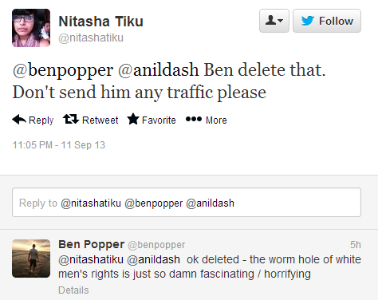

Daryush "Roosh" Valizadeh created ROK in October 2012. You can visit his blog at RooshV.com or follow him on Twitter and Facebook.


I’ve stumbled upon the formula that liberals based primarily in New York City use to attack those that go against their narrative. I want to discuss their methods and suggest a possible counterattack.
Their attack begins with a low-level staff writer, often a woman, on one of the many blogs that are primary headquartered in NYC, such as Gawker, Huffington Post, Buzzfeed, Atlantic, Salon, Slate, and Wonkette. She writes about the latest man who is a “misogynist,” “racist,” or “bigot” of some sort. Even though all the sites I mentioned are owned by different entities, the hate piece quickly cascades through their network, often within a day. This is no surprise when you consider that staff members at all these sites know each other in real life and have both friendly and sexual relations. Or perhaps they are just lazy and rather copy/paste a news item that someone else wrote instead of finding an original story themselves.
The articles, full of snark and liberal talking points, greatly anger their liberal audience. Now, understand that today’s liberal doesn’t attack through the courts or police—they go after a man’s livelihood using the internet. The articles all contain the victim’s employment, sometimes even contact information of his boss or CEO (if the victim owns his own company, they will list his advertisers or customers). They are sure to include the source of the victim’s income.
All those angry readers now channel their anger on Twitter. They form a huge bot army that engages the victim’s source of income through a deluge of angry tweets, along the lines of “Did you know that you employ a man who does so and so?” No company can withstand this type of negative publicity, so within a day or two, the victim in question loses his employment. Because all of the sites have huge audiences, the bot army is quite large and impressive.
Their attack depends on four factors:
Their system is quite effective at reaching the desired end, but like all systems, there is a weakness. Can you spot it?
The weakness lies in the original writer of the hit piece. Once the story goes viral, she is often forgotten, but it’s her where the counterattack can be successfully executed. There really is no point engaging the bot army because their numbers are more than 10,000 times ours. Any attempt to fight them on Twitter will result in defeat, especially when you consider that they have tons of soldiers with over 50,000 followers (I have less than 6,000).
There is also no point in attacking companies like Gawker, who earn millions of dollars a year and can withstand any criticism we throw at them. But the blogger making $30,000 a year, trying to eke out a living in New York City, with hopes of climbing up the career ladder once it’s clear she’s not talented enough to be a real writer, is very vulnerable to being even slightly attacked. Anything that damages her future employment chances will cause her grief, pain, and a decrease in income.
Twitter is a medium that is short and fleeting. Unless we can raise a huge rage army at short notice, which we can’t, there is little point using this medium to fight back. But there is a medium which lasts forever, and where numbers don’t matter as much. That medium is Google.
I have been successfully destroyed on Google. My name is linked to all sorts of negative material that ensures I will never get a corporate job again in my life. That’s fine with me since I make my living via other means, but that’s not fine for blog writers who still need to depend on corporate America. Little Susie is writing for Jezebel today, but she will have to change jobs at some point, meaning a Human Resources airhead will search for her name to make sure she is a proper fit for the company. What would be HR’s reaction if they google their promising applicant and find this?
They wouldn’t hire her. Unless she’s applying for a position at Jezebel, no respectable company will touch a toxic individual who has been linked to racism. They don’t want anyone who may cause controversy for them, and behind rape, nothing says controversy like race. If you dig into these writers work and background, you can easily find cases where they spew anti-white or misandrist views. All that’s left is getting that on the first page of Google.
It’s a slow-burn attack that will effectively punish these writers and scare their co-workers, whose income is low enough that they need to depend on corporate employment indefinitely, unless one day they get an original thought and can stay away from their iPhone long enough to write a book. It won’t work on the big liberal writers like Jessica Valenti or Naomi Wolf, since any attention they get just helps them sell more books, but it does work on the young girl out of college trying to win feminist brownie points by denouncing a man for being “creepy” based on a bad joke.
If you’re still skeptical on whether this will work, simply take a look at Nitasha Tiku, whose anti-white racism I highlighted recently. Within half a day, that post shot to the first page of Google when searching for her name. Whereas one day before Nitasha was gleefully retweeting my hate against her to rally her supporters, the following day she went completely silent. When one of her NYC media friends posted a link to my article, she took only 8 minutes to beg him to take it down (like an obedient puppy dog, he did).

Does that sound like a girl who doesn’t care what anyone says about her? One thing she was wrong about is that the traffic doesn’t matter—it’s about page rank. The more people that link to it or retweet it, the higher it will go in a Google result for her name. And this will stay there forever. She can easily dodge any Twitter attack we send her, but she can’t run from Google. No one can.
Not long ago, Buzzfeed insinuated I was a rapist. If I was a lowly staff writer who had to stroke Nick Denton’s gay balls every day, I’d shake in my boots. I’d never get hired in a corporation again. But it actually had four benefits for me:
An attack that would devastate a person like Nitasha put money in my pocket. The reason they don’t go after me anymore, even though all of them read me, is because they know that even mentioning me makes me stronger. I lost count how many times it happened where one of them tweeted me (usually a hack from The Atlantic), but then deleted the tweet not an hour later. I am on some type of blacklist, and to me that’s fine, because I have enough seed traffic to create agitation in their gender-neutral souls. I also have the power to shoot anyone’s name to at least the second page of Google within a day. And there’s not a damn thing they can do about it.
I scared Nitasha with almost no work—it was just one blog post. Now imagine if there was just minor coordination within this part of the masculine sphere to attack one lowly staff writer who can barely make rent the following month. What if the first page of Google has several hits highlighting her anti-white or anti-male behavior? How many sleepless nights do you think she will have? A lot, and do you know how I know? Because several years ago I had those same sleepless nights.
Having your name destroyed on Google is the internet version of getting raped. I know this will hurt them because it hurt me, as right now I’m stuck in some backwater European city, waking up at noon every day, banging thin women who bake me cakes and wear heels like they’re sneakers. At the same time I make love to foreign women without condoms, I have immunity from liberal attacks, and have decided to use this immunity for the good of men from my birth country. It’s as if I have been blessed with a superpower.
There will be another Pax in the near future. All we have to do is follow these steps:
Our attack is slower and doesn’t have the explosiveness of their Twitter bot army, but it works. In time, we will have our own bot army, but until then, Google is the equalizer that will put the brakes on their hatred of men and traditional masculinity. They have money, they have dozens of high-profile sites, and they have millions of readers, but we have the first page of the most popular search engine in the world.
Previously: Are Nitasha Tiku & Anil Dash Racist Against White Men?